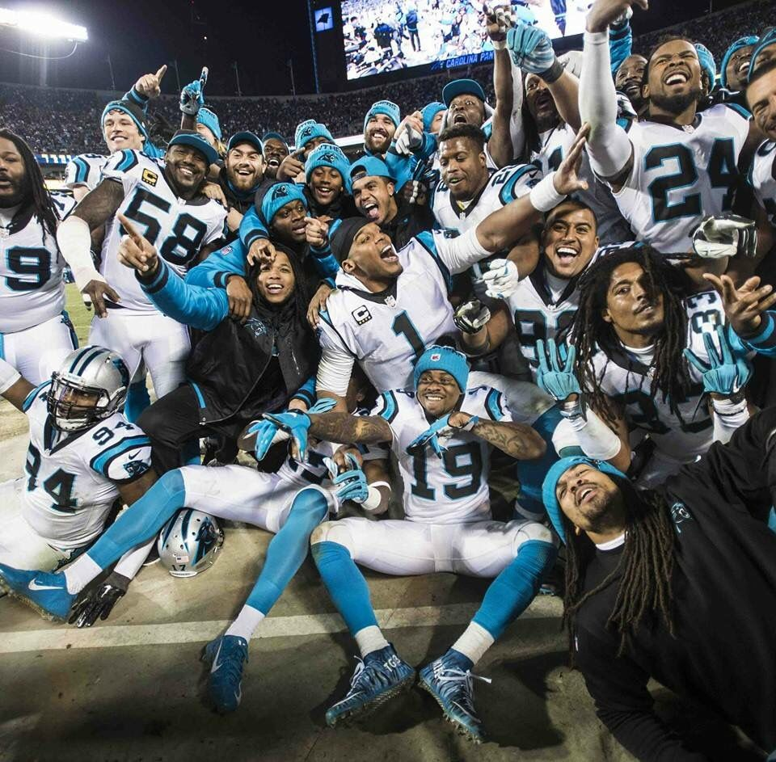
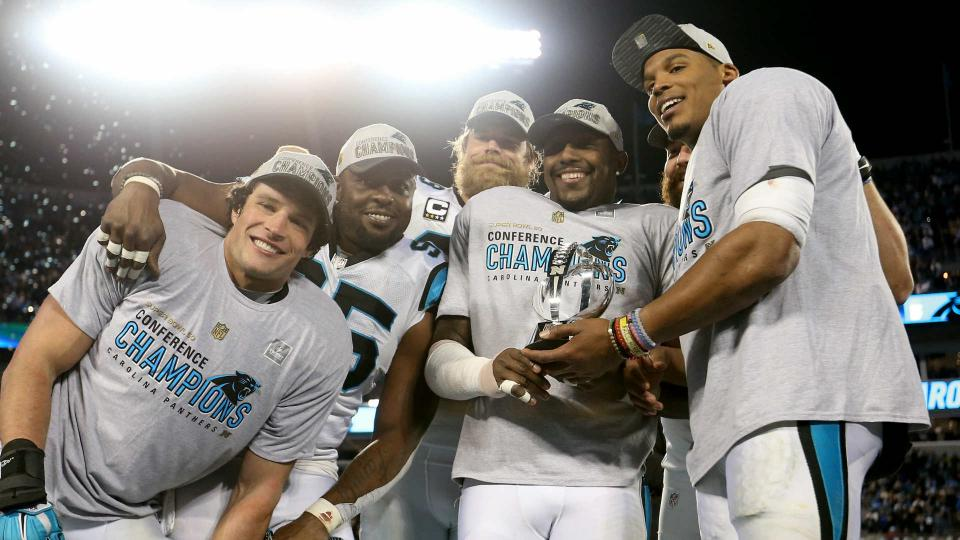

The 2015 Carolina Panthers delivered one of the most memorable seasons in franchise history, finishing with a dominant 15–1 record. Led by MVP quarterback, Cam Newton, the team showcased an explosive offense paired with a relentless, turnover creating defense. Their energy and confidence became a defining trait, with celebrations and big plays fueling national attention. Key contributors like Luke Kuechly, Greg Olsen, and Josh Norman elevated the team’s performance week after week. By the end of the regular season, the Panthers were widely viewed as the NFL’s most complete and intimidating team.

In the playoffs, Carolina continued its momentum with decisive wins over the Seahawks and Cardinals, earning a trip to Super Bowl 50. The defense played at an elite level, overwhelming opponents with speed and physicality. Although the Panthers ultimately fell short against the Denver Broncos, the season remained a landmark achievement for the franchise. Fans still remember the team’s swagger, chemistry, and highlight‑reel moments that defined the year. Overall, the 2015 Panthers set a new standard for excellence and left a lasting legacy in NFL history.

- 2015 Carolina Panthers Divisional Playoff Game vs. Seahawks
- 2015 Carolina Panthers NFC Championship Game vs. Cardinals
- 2015 Carolina Panthers Super Bowl Game vs. Broncos
| Round | Opponent | Result | Score |
|---|---|---|---|
| Divisional Round | Seattle Seahawks | Win | 31-24 |
| NFC Championship | Arizona Cardinals | Win | 49-15 |
| Super Bowl 50 | Denver Broncos | Loss | 10-24 |